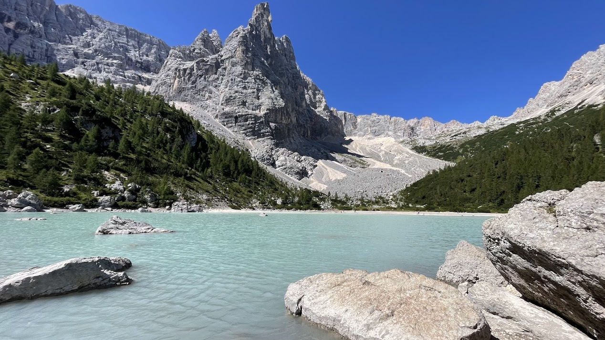

Los Dolomitas son una cadena montañosa situada
en el noreste de Italia, dentro de los Alpes.
Destacan por sus impresionantes formaciones
rocosas, sus valles y sus lagos de montaña.
¿Qué hace especiales a los Dolomitas?
Sus paisajes combinan grandes paredes de roca,
praderas alpinas y pequeños pueblos rodeados
de naturaleza.
Formaciones rocosas características de la región.
Una de las principales razones para visitar
esta región es la posibilidad de disfrutar
de numerosos senderos, miradores y paisajes.
Mis rutas por los Dolomitas
Durante mi viaje pude conocer algunos de
los lugares más representativos de los
Dolomitas. Estas fueron tres de mis visitas.
Tre Cime di Lavaredo
Las Tres Cimas de Lavaredo son uno de
los símbolos más conocidos de los
Dolomitas. Sus senderos permiten
disfrutar de vistas espectaculares.
Las Tres Cimas de Lavaredo.
Lago di Sorapis
El Lago di Sorapis destaca por el
característico color turquesa de sus
aguas y por el entorno montañoso que
lo rodea. Llegar hasta él requiere
realizar una ruta de senderismo.

Lago di Sorapis y su entorno montañoso.
Val di Funes
En Val di Funes visité sus miradores,
desde los que se pueden contemplar
las montañas Odle y los paisajes
del valle.
Vistas del valle de Val di Funes.
¿Cuánto cuesta viajar a los Dolomitas?
Antes de organizar un viaje a los
Dolomitas, es importante tener en cuenta
los principales gastos.
Estimación de gastos
Completa los importes según la duración del viaje,
la temporada y el número de personas.